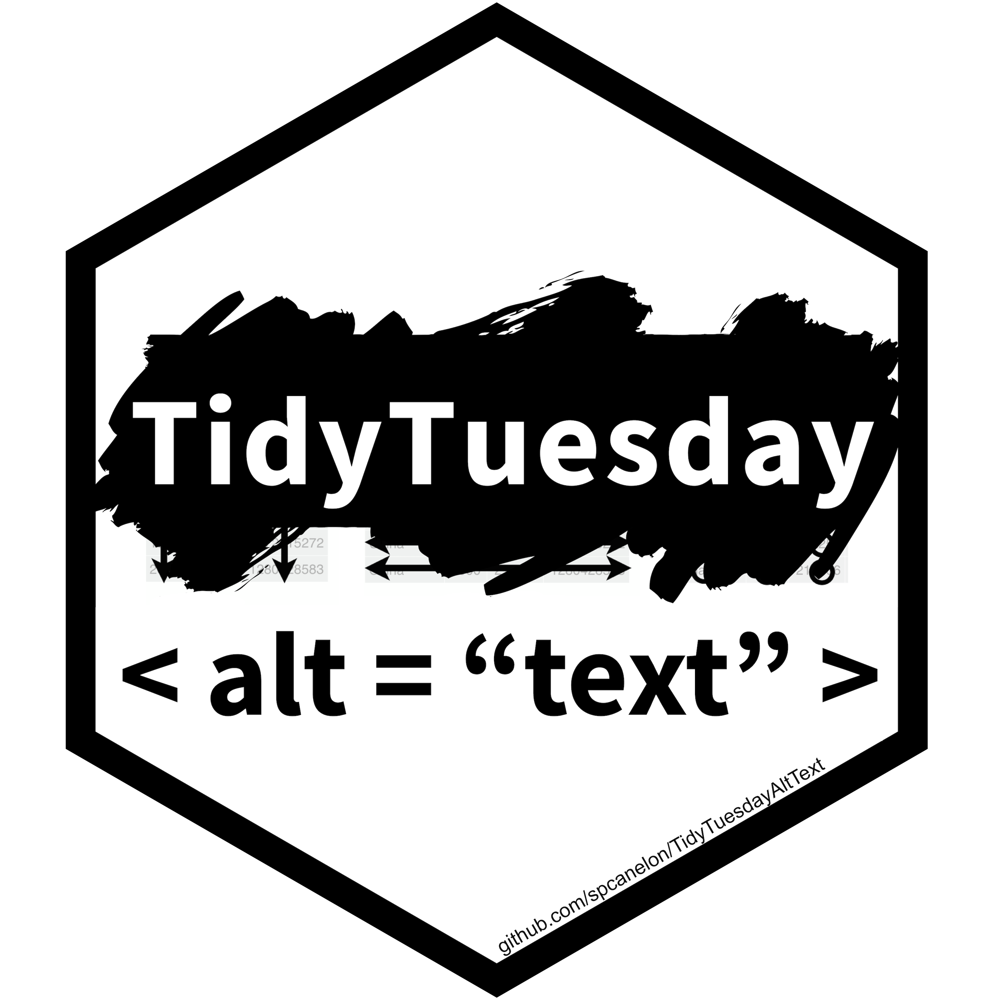

TidyTuesdayAltText
An R package with the goal of providing insight into the alternative (alt) text accompanying the data visualizations shared on Twitter as part of the TidyTuesday social project
By Silvia Canelón in R Package
May 4, 2021
About the data 
The original data were collected and made available by Tom Mock ( @thomas_mock) using {rtweet}. These data are available in the TidyTuesday repository.
These tweets were processed and scraped for alternative text by Silvia Canelón ( @spcanelon)
- Data were filtered to remove tweets without attached media (e.g. images)
- Data were supplemented with reply tweets collected using {rtweet}. This was done to identify whether the original tweet or a reply tweet contained an external link (e.g. data source, repository with source code)
- Alternative (alt) text was scraped from tweet images using {RSelenium}. The first image attached to each tweet was considered the primary image and only the primary image from each tweet was scraped for alternative text. The following attributes were used to build the scraper:
- CSS selector:
.css-1dbjc4n.r-1p0dtai.r-1mlwlqe.r-1d2f490.r-11wrixw - Element attribute:
aria-label

Figure 1: Example of web inspection being used to identify the CSS selector utilized for alt-text web scraping
This data package does not include data that could directly identify the tweet author in order to respect any author’s decision to delete a tweet or make their account private after the data was originally collected.1
To obtain the tweet text, author screen name, and many other tweet attributes, you can “rehydrate” the TweetIds (or “status” ids)2) using the {rtweet} package.3
TidyTuesday databases on Notion
I use the data available in the TidyTuesday repository to populate some searchable TidyTuesday databases at tiny.cc/notion-dataviz with data visualizations tagged by the dataset of the week, hashtags, mentions, etc.

Figure 2: Screenshot of the 2021 TidyTuesday database on Notion, taken on June 1, 2021
Thanks to historical twitter data collected by @thomas_mock, the #TidyTuesday database now has tweets dating back to 2018! 🥳
align = “center”
6100+ searchable tweets w/ #dataviz creations from 1400+ participants 🤩
Check it out! https://t.co/8xtZrBMjML#RStats #ggplot2https://t.co/IfkF58lt52 pic.twitter.com/GvjNlOIVAd
- Posted on:
- May 4, 2021
- Length:
- 2 minute read, 333 words